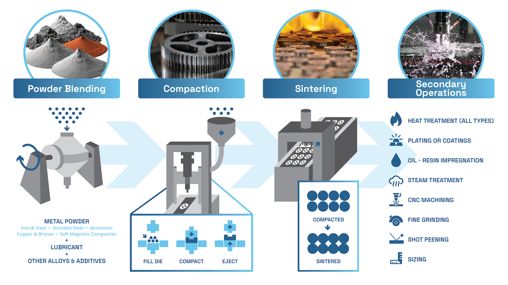
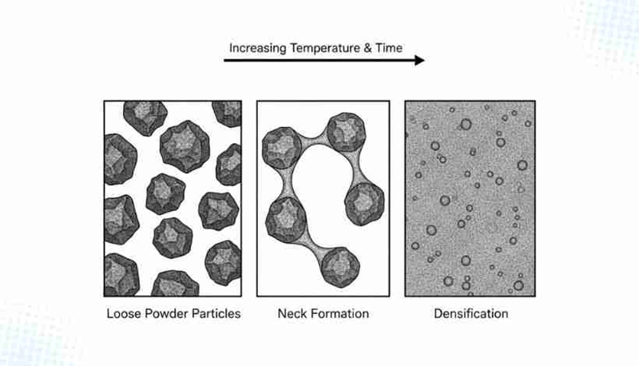
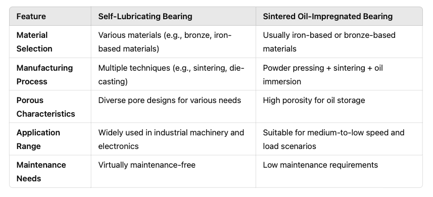
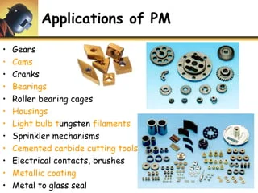

POWDER METALLURGY
Exam Revision Guide for Competitive Exams
High-frequency topics: Process sequence (Production → Blending → Compacting → Sintering),
Sintering solid-state diffusion ($T < T_m$), Green compact definition, Impregnation vs Infiltration, Tungsten
Carbide (WC) applications, Mass conservation ($m_{\text{powder}}=m_{\text{green}}=m_{\text{sintered}}$).
1. Core Concepts & Definitions
1.1 Powder Metallurgy (P/M) — Overall Definition
Powder Metallurgy = Manufacturing process combining:
1. Powder production from raw metals
2. Blending with lubricants
3. Pressing (compacting) into die shapes
4. Sintering (heating below melting point)
Primary use: Materials with extremely high melting points or immiscible liquid-state alloys
1.2 Process Sequence (Most-Tested — Exam Critical)
Powder Production → Blending → Compacting → Sintering → Secondary Ops
- Powder Production: Raw metal powders created by atomization, reduction, or
mechanical grinding.
- Blending: Mix metal powders with lubricants (graphite, zinc stearate) to
reduce die friction.
- Compacting: Pressing powder in die at high pressure to form "green compact"
with basic shape and handling strength.
- Sintering: Heating green compact in protective furnace atmosphere below
melting point.
- Secondary Operations: Optional finishing (impregnation, infiltration,
coining, heat treatment).

Figure 1.1: Powder Metallurgy Sequence — Powder Production, Blending, Die Compaction, & Sintering Furnace.
1.3 Green Compact (Most-Tested Definition)
Green Compact = Loose powder after compacting in die press
Properties:
• Has basic shape and geometry
• Low strength but sufficient for handling
• Mass conserved: m_powder = m_green
Next step: Must be sintered to develop full mechanical properties
1.4 Sintering — Solid-State Bonding (Critical Distinction)
Sintering = Heating green compact BELOW melting point in protective atmosphere
Temperature criterion: T_sintering < T_melting (typically 70–80% of T_m)
Mechanism: SOLID-STATE atomic diffusion bonds particles
Key fact: Particles do NOT melt — bonding is diffusion-based, not fusion
TRAP ALERT: Exams often test "particles melt during sintering" — this is FALSE.

Figure 1.2: Solid-State Sintering — Particle Neck Formation & Densification via Atomic Diffusion ($T < T_m$).
1.5 Sintering Objectives
After sintering, green compact gains:
✓ Metallic/crystalline bonding between particles
✓ Increased density (eliminates some porosity)
✓ Increased strength, hardness, tensile strength
✓ Reduced brittleness
✓ Removal of surface oxides via reducing furnace atmosphere
1.6 Residual Porosity After Sintering
Sintered P/M parts contain: 5–25% interconnected micro-porosity
This porosity is intentional and useful for:
• Oil impregnation (self-lubricating bearings)
• Metal infiltration (densification)
• Filtration applications (filters)
1.7 Impregnation vs Infiltration (Most-Tested Secondary Operations)
IMPREGNATION:
Input: Non-metallic fluid (oil, grease, wax)
Process: Filling pores under vacuum
Purpose: Self-lubrication (no external oil needed)
Example: Sintered bronze bushings in automotive motors
INFILTRATION:
Input: Molten metal with lower melting point
Process: Liquid metal fills open pores by capillary force
Purpose: Densification; increases strength and hardness
Example: Liquid copper infiltrated into iron compact
Memory aid: Oil → Impregnation |
Metal → Infiltration

Figure 1.3: Secondary Operations — Oil Impregnation (Self-Lubricating Bearings) vs Liquid Metal Infiltration (Densification).
1.8 Furnace Atmosphere During Sintering
Protective atmospheres used:
• Hydrogen (H₂) — reduces surface oxides
• Dissociated ammonia (N₂ + H₂ from NH₃)
• Nitrogen in special cases
Purpose: Prevent oxidation; remove surface oxide films that block diffusion
2. Essential Formulas & Principles
2.1 Mass Conservation in P/M (Critical Principle)
$$m_{\text{powder}} = m_{\text{green compact}} = m_{\text{sintered part}}$$
Implication: No material loss in compacting or sintering (unlike casting or forging with
material waste).
2.2 Sintering Temperature Criterion
$$T_{\text{sintering}} < T_{\text{melting}}$$
Typical range: $T_{\text{sintering}} = 0.7 \text{ to } 0.8 \times T_m$ (in Kelvin). Example:
Iron ($T_m = 1811\text{ K}$) sintered at $1200\text{--}1450\text{ K}$.
2.3 Shrinkage During Sintering
Shrinkage depends on:
• Compacting pressure (higher pressure → less shrinkage)
• Particle size (smaller particles → more shrinkage)
• Sintering temperature (higher T → more shrinkage)
• Hold time in furnace (longer time → more shrinkage)
Typical shrinkage: 10–20% linear dimension reduction
2.4 Densification Mechanism (Exam-Tested Concept)
Densification during sintering is driven by:
✓ Surface diffusion (atoms move along particle surfaces)
✓ Volume diffusion (atoms move through particle bulk)
✓ Grain boundary diffusion (fastest path along boundaries)
NOT driven by grain growth alone
2.5 Green Strength and Compacting Pressure Relation
Green strength increases with compacting pressure
Higher pressure → Denser green compact → Better particle contact
→
Higher green strength → Safer handling before sintering
2.6 Lubricant Role in Blending
Lubricants added during blending (1–2% by weight):
• Reduce friction between powder and die walls during compacting
• Allow uniform pressure distribution in compact
• Improve dimensional accuracy
• Common lubricants: Graphite, zinc stearate, lithium stearate
3. Secondary Operations & Industrial Applications
3.1 Secondary Finishing Operations (After Sintering)
| Operation |
Input / Method |
Purpose / Outcome |
Typical Application |
| Impregnation |
Immerse sintered part in oil under vacuum |
Pores filled with oil; creates self-lubricating component |
Automotive motor bearings, home appliance bushings |
| Infiltration |
Liquid metal (Cu, Ni, Sn) fills open pores by capillary force |
Eliminates porosity; increases density, strength, hardness |
Iron parts with Cu infiltration for higher tensile strength |
| Coining |
Final light pressing in die to refine surface and dimensions |
Improves dimensional accuracy and surface finish |
Precision gears, small structural parts |
| Sizing |
Calibrated pressing to achieve exact final dimensions |
Eliminates shrinkage variation from sintering |
Components requiring tight tolerances |
| Heat Treatment |
Quenching, tempering, annealing after sintering |
Adjusts hardness, toughness, metallurgical structure |
Gears, cams, structural components |
3.2 Major Industrial Applications (Most-Tested)
| Application |
Material System |
Why P/M is Chosen |
Exam Frequency |
| Tungsten Carbide (WC) Cutting Tool Inserts |
WC powder + Cobalt binder |
Extremely high melting point (WC ≈ 2800°C); cannot be cast or machined easily |
VERY HIGH — single most-tested application |
| Self-Lubricating Bearings (Bronze) |
Sintered bronze (Cu-Sn) |
Pores impregnated with oil; eliminates need for external lubrication |
HIGH — frequently tested with impregnation |
| Porous Metal Filters |
Sintered bronze, stainless steel |
Controlled porosity for filtration; can be designed for specific particle sizes |
MEDIUM — appears in materials questions |
| Gears & Cams |
Iron, steel, iron-copper |
Near-net-shape; minimal material waste; complex geometry possible |
MEDIUM — tested with process advantages |
| Magnetic Soft Magnets |
Iron, nickel-iron alloys |
Precise porosity control; tailored magnetic properties |
LOW — specialized material |
| Immiscible Alloys |
Cu-Pb, Cu-Ag (alloys that separate in liquid) |
P/M allows blending these materials; casting would cause segregation |
MEDIUM — tests understanding of P/M advantage |

Figure 3.1: Industrial Applications — Tungsten Carbide (WC) Cutting Inserts, Sintered Bearings, & P/M Gears.
4. Key Points to Remember
- Process sequence is fixed: Powder Production → Blending → Compacting →
Sintering. Any other order in MCQ is wrong.
- Mass is conserved: $m_{\text{powder}} = m_{\text{green}} =
m_{\text{sintered}}$. No material loss in P/M.
- Sintering is solid-state diffusion, NOT melting. TRAP:
"Particles melt during sintering" is FALSE. Bonding occurs below melting point via atomic diffusion.
- Sintering temperature always satisfies $T_{\text{sintering}} < T_{\text{melting}}$
(typically 70–80% of $T_m$).
- Green compact has low strength but enough to handle. Full strength develops
only after sintering.
- Impregnation uses oil for self-lubrication; infiltration uses molten metal for
densification. FREQUENTLY TESTED TRAP.
- Residual porosity (5–25%) after sintering is intentional and used for
impregnation or filtration applications.
- Tungsten carbide (WC) tool inserts are the primary P/M application. Tested more
than any other material. Reason: WC has extremely high melting point (~2800°C); cannot be cast or machined.
- Self-lubricating bearings are impregnated with oil to eliminate external
lubrication requirement in automotive and appliance motors.
- Secondary operations (impregnation, infiltration, coining, heat treatment) are
OPTIONAL and performed AFTER sintering. Sintering is the MANDATORY primary step.
- Lubricants in blending reduce die friction (typically 1–2% by weight; common:
graphite, zinc stearate), allowing better dimensional control.
- Shrinkage during sintering depends on compacting pressure, particle size,
sintering temperature, and hold time. Higher pressure → less shrinkage.
- Densification during sintering is driven by atomic diffusion (surface, volume,
grain boundary diffusion), NOT by grain growth alone.
- Protective furnace atmosphere (H₂, dissociated NH₃) removes surface oxides
that block diffusion during sintering.
- P/M is uniquely suited for immiscible alloys (Cu-Pb, Cu-Ag) that segregate
during casting, or materials with extremely high melting points.
Revision Focus Areas (Frequency-Ranked):
1. Process sequence | 2. Mass conservation | 3. Sintering ($T < T_m$, solid-state
diffusion, NOT melting) | 4. Impregnation vs Infiltration | 5. Tungsten
Carbide applications